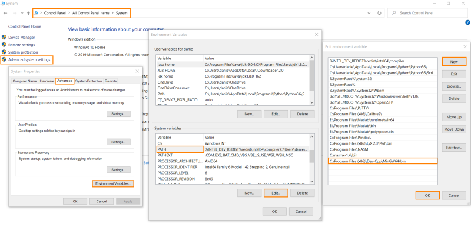

gcc/g++ (Dev-C++)
MinGW64
MinGW64 is a directory of Dev-C++ (e.g.: C:\Program Files (x86)\Dev-Cpp\MinGW64) where all the compiling tools are stored.
MinGW64 is an improved version of the MinGW (Minimalist GNU compiler for Windows), which provides programming tools for developing native MS-Windows applications.
Add MinGW64 bin folder to the environment variables
Once installed Dev-C++ we have to remember to add:
C:\Program Files (x86)\Dev-Cpp\MinGW64\bin
to the environment variables so that you can run
gcc(to compile .c or .cpp files)from any path in the command prompt(cmd)
After that we added the folder to the environment variables we have to restart the pc in order that the changes take effect
Compile using gcc compiler
gcc -m32 HelloWorld.c -o HelloWorld.exe
→ compile the file HelloWorld.c for 32-bit environments
-o → output the compiled file to a file named HelloWorld.exe.
HelloWorld.exe //to execute
Compile using g++ compiler
gcc does not add the C++ library. g++ is a program that calls GCC and automatically specifies linking against the C++ library.
g++ is equivalent to
gcc -xc++ -lstdc++ -shared-libgcc (the 1st is a compiler option, the 2nd two are linker options)
g++ -m32 HelloWorld.cpp -o HelloWorld.exe
Differences between compilers
Every compiler will produce a slightly different output. Therefore, the same source code compiled with different compilers (such as Microsoft Visual Studio, MinGW, GCC...) may produce different machine codes.
{kind=link}